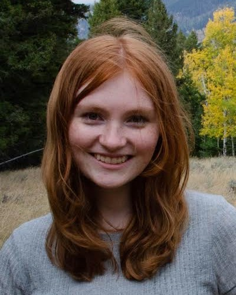

Katherine Holm | WDD 130
Hi! My name is Katherine, I'm a physics major from Boston, MA. I wanted to learn more about coding, so I'm excited to take this class!
Hi! My name is Katherine, I'm a physics major from Boston, MA. I wanted to learn more about coding, so I'm excited to take this class!
Massachuesettes is the bay state. Home to American history, hundreds of beaches, and 146 universities. Boston and its suburbs contain stunning architecture, support the cutting edge of technology, and offer fantastic sea food. My personal favorite attraction is Salem, MA. Take a ghost tour or visit the witch trial museum.